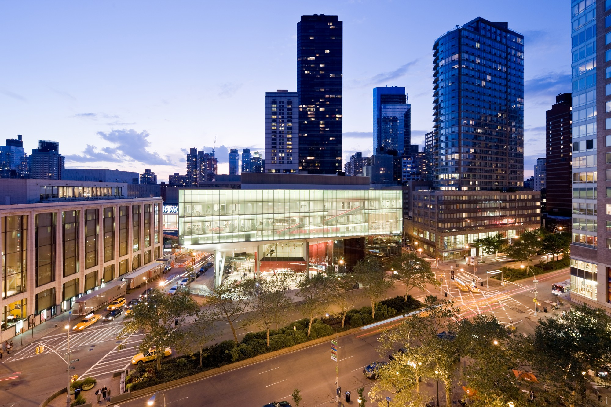
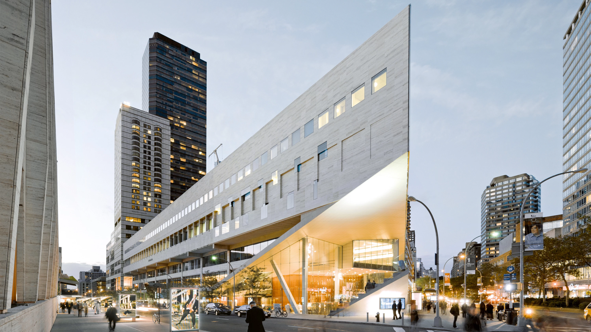
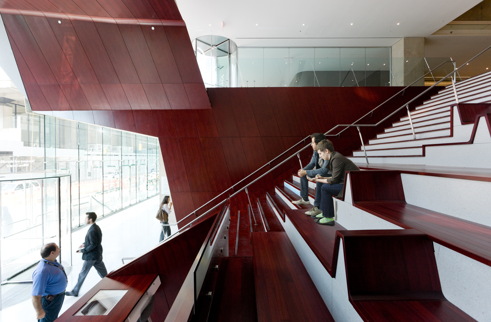
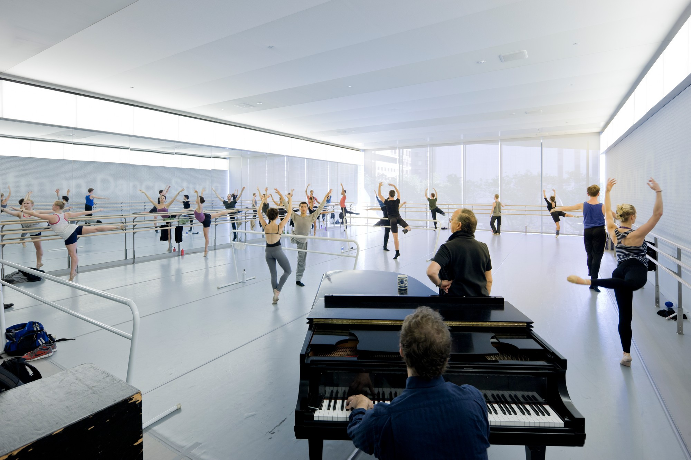
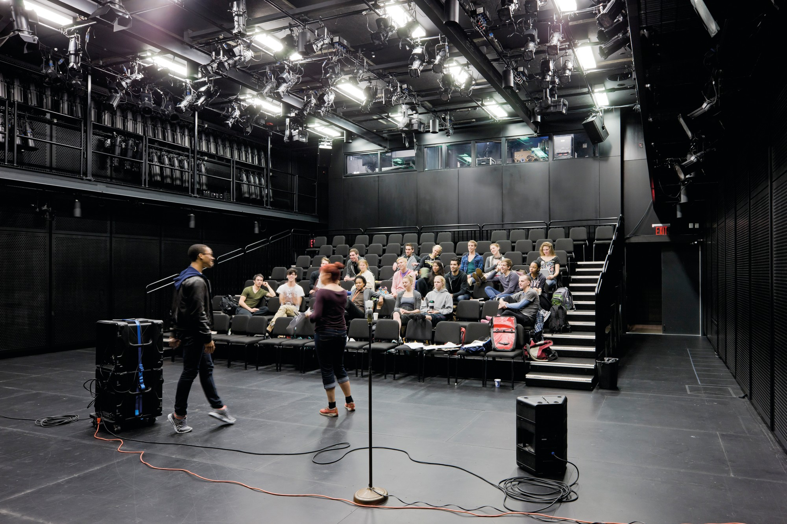
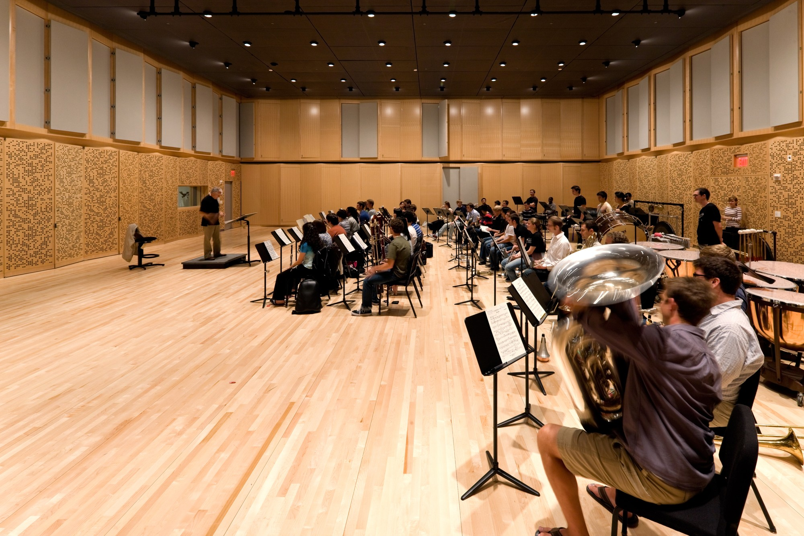
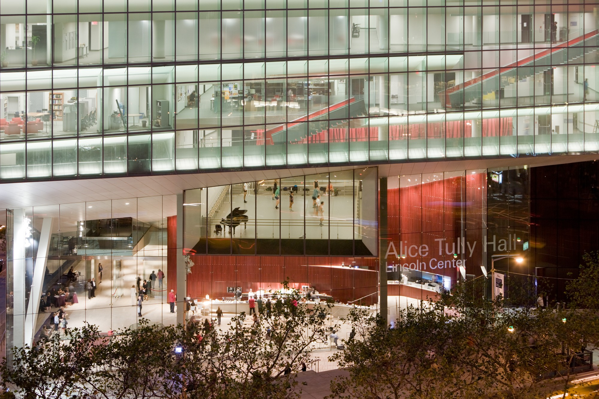
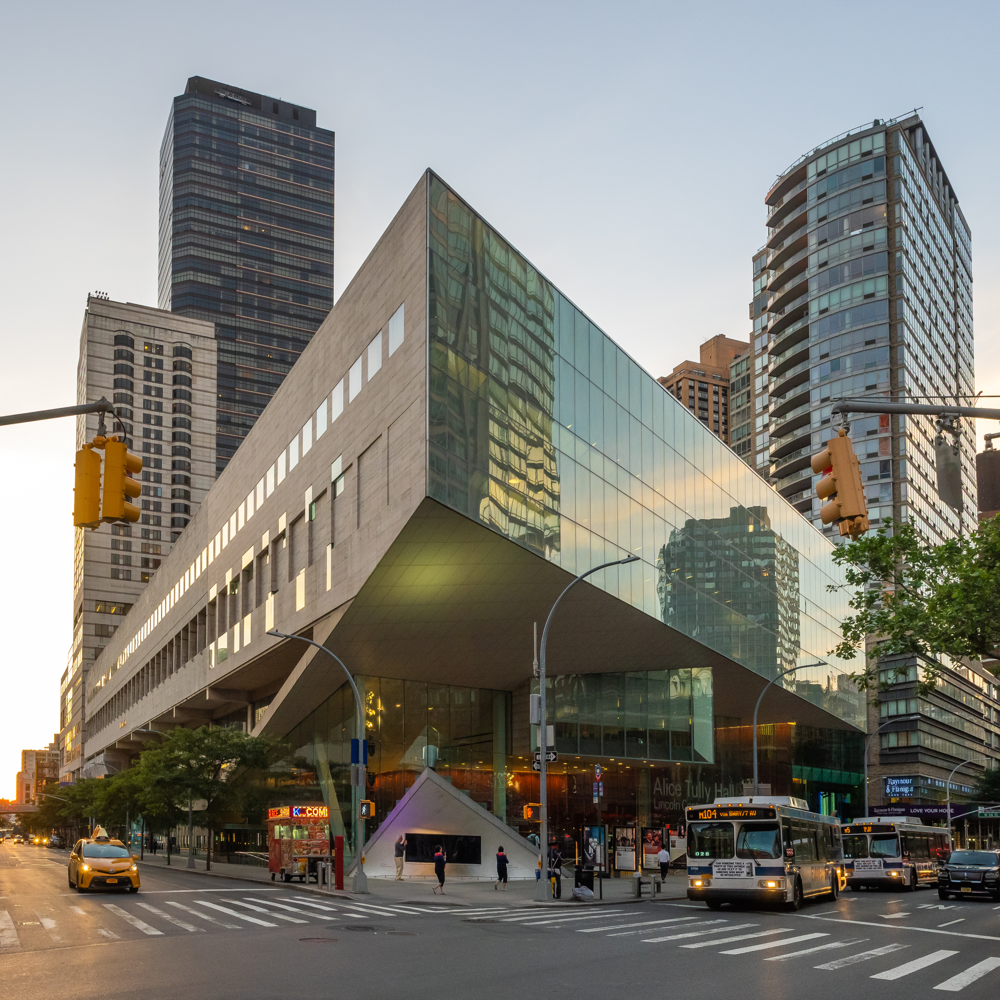

the
juilliard
schoollincoln center for the performing arts
The Juilliard School at Lincoln Center had long outgrown Pietro Belluschi’s 1960’s building, widely considered one of the best examples of Brutalism in the US. The nearly 100,000 square foot expansion/renovation restores some of the building’s lost architectural features while positioning this premiere music, dance, and drama conservatory for the future.

Features of the renovation include an entrance lobby and box office; a black box theater; an orchestra rehearsal space and recording studio; jazz studios; a large dance rehearsal studio; a library expansion; an archive for rare music manuscripts; plus smaller studios, rehearsal rooms, classrooms, administrative offices, and lounges. Three teaching levels are expanded by 45,000 sf into the open triangular site toward Broadway. The cantilevered volume of The Juilliard School's expansion is a framing canopy for the Alice Tully Hall expansion below. The east façade organizes a system of circulation and public spaces while revealing school activities to the street.




New features include a grand lobby entrance stair/hangout space in which risers morph into couches; single surface open riser steel communicating stair; a suspended dance studio opening to the street; and a travertine façade with punched three–dimensional prismatic windows.

Sarofim Hall is designed to encourage cross-disciplinary learning and idea sharing. Large sliding panels connect studios around a central review space on the top floor t of the building, allowing students from different disciplines and from the senior thesis studio to see and share their work and ideas more fluidly. In addition to the glass facade design, solar and blackout shades let students control and modulate daylight exposure in their creative environment.

project
information
CLIENT: The Juilliard School
LOCATION: New York City, New York, United States
COMMISSION: 2003
COMPLETED: 2009
project
credits
PARTNERS: Charles Renfro, Elizabeth Diller, and Ricardo Scofidio
PROJECT LEADER: Gerard Sullivan and Robert Condon
DESIGNERS: Benjamin Gilmartin, Ben Mickus, Josh Uhl, Michael Hundsnurscher, Eric Howeler, Sebastian Guivernau, Felipe Ferrer,Krists Karklins, Shawn Mackinnon, and Anthony Saby
external
credits
DESIGN ARCHITECTS: Diller Scofidio + Renfro in collaboration with FXCollaborative
STRUCTURAL ENGINEERING AND MECHANICAL ENGINEERING: Arup
LIGHTING: L’Observatoire International
ACOUSTICS: Jaffe Holden
THEATER CONSULTANT: Fisher Dachs Associates
GRAPHICS: 2x4
CURTAIN WALL: R.A. Heintges & Associates
WATERPROOFING CONSULTANT: James R. Gainfort Consulting Architects
HARDWARE CONSULTANT: Rich Haulser
AV, TELECOM, AND DATA: Shen Milsom & Wilke
ELEVATOR CONSULTANT: Van Deusen & Associates
GEOTECHNICAL CONSULTANT: Langan
CODE CONSULTANT: Jerome S. Gillman Consulting
SECURITY CONSULTANT: Aggleton & Associates
CONSTRUCTION MANAGER: Turner Construction Company